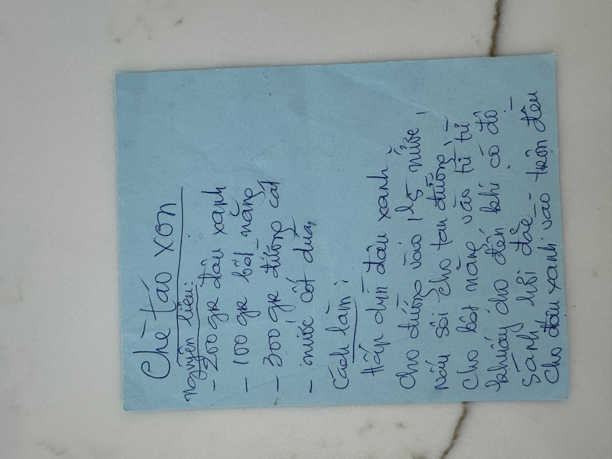

← Back to recipes
Chè Tào Xọn
Mung Bean Dessert
From Mẹ — Oanh
Nguyên liệu · Ingredients
- 200g mung beans (đậu xanh), husked and split
- 100g tapioca starch (bột năng)
- 300g sugar
- 1 can (13.5 oz) coconut cream
- 3–4 cups water
- Pinch of salt
- Pandan leaves (optional)
Cách làm · Instructions
- Rinse the mung beans several times until the water runs clear. Soak for at least 2 hours, or overnight for the softest texture. Drain well.
- Steam the mung beans for 20–25 minutes until completely tender. They should mash easily when pressed with the back of a spoon. Mẹ preferred steaming over boiling because it keeps the beans dry and easier to work with.
- While the beans steam, make the sugar syrup. Combine the sugar with 3 cups of water in a large pot. Add pandan leaves if using. Bring to a boil, stirring until all the sugar dissolves. Reduce heat to medium.
- Mix the tapioca starch with about ½ cup of cold water to make a smooth slurry — no lumps. Slowly pour the slurry into the simmering sugar syrup, stirring constantly. Keep stirring in one direction as it thickens. Mẹ always said "khuấy một chiều thôi" — stir one way only, or it won't set right.
- Continue stirring over medium heat until the mixture becomes thick, glossy, and slightly translucent. It should have a smooth, gel-like consistency that holds its shape on a spoon.
- Fold in the steamed mung beans. Stir gently to distribute them evenly throughout the tapioca mixture. The beans should be visible throughout, like little golden dots suspended in the clear jelly.
- Serve warm or at room temperature, topped with a generous drizzle of coconut cream and a pinch of salt. The contrast of the warm, sweet tapioca with the rich coconut cream is what makes this chè so special.
Công thức gốc · Original handwritten recipe

❦
A recipe from Mẹ's kitchen